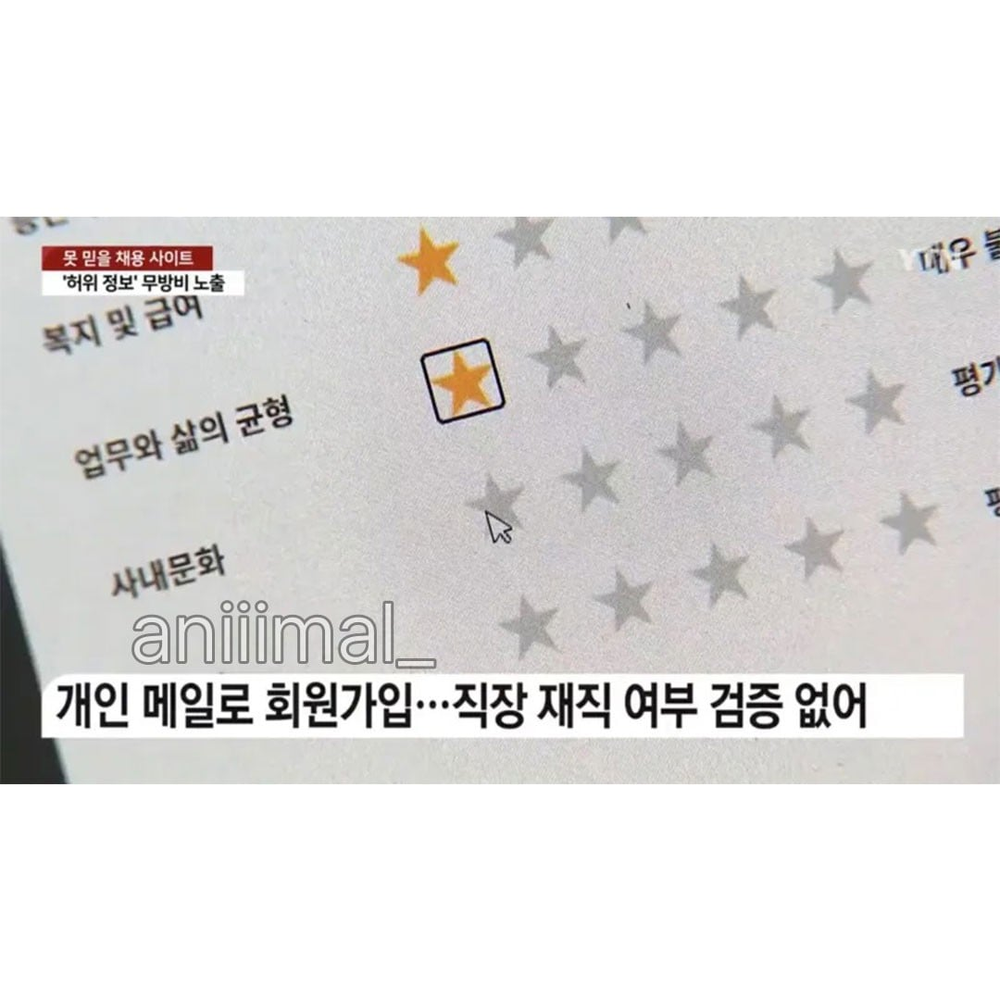
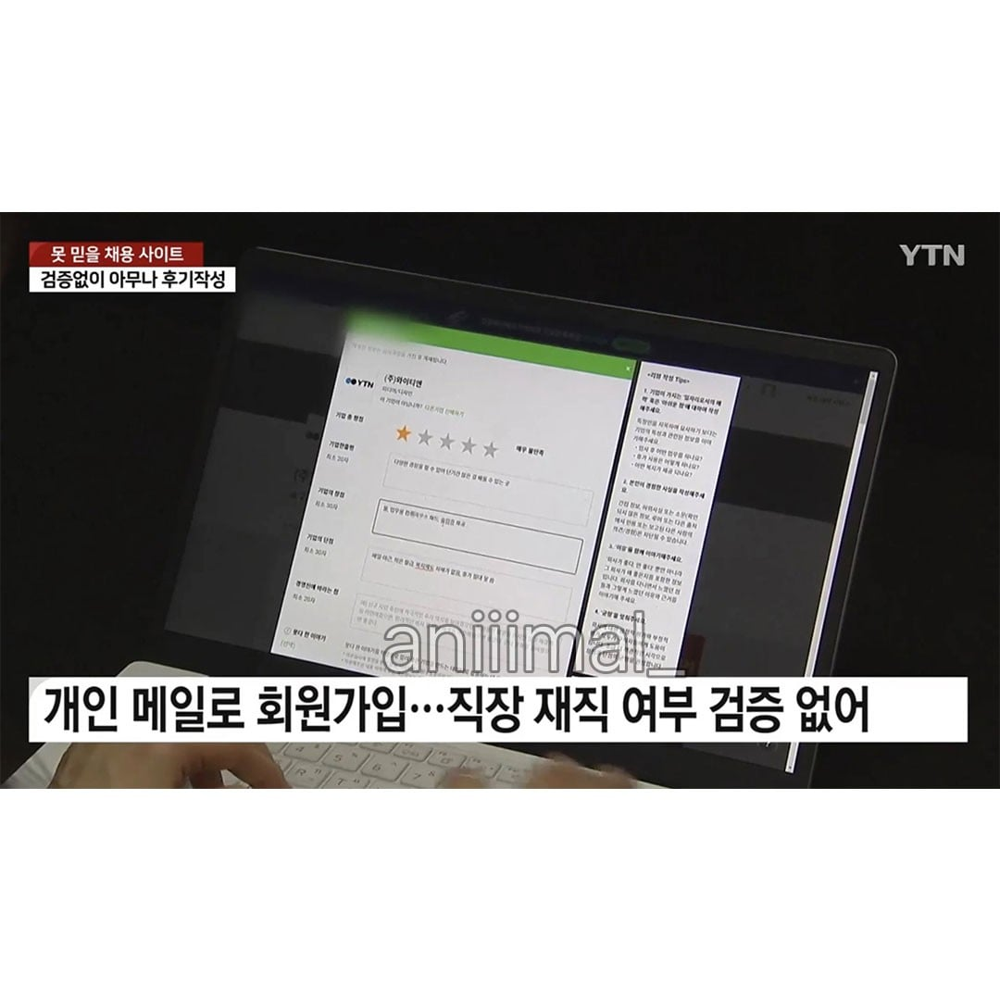
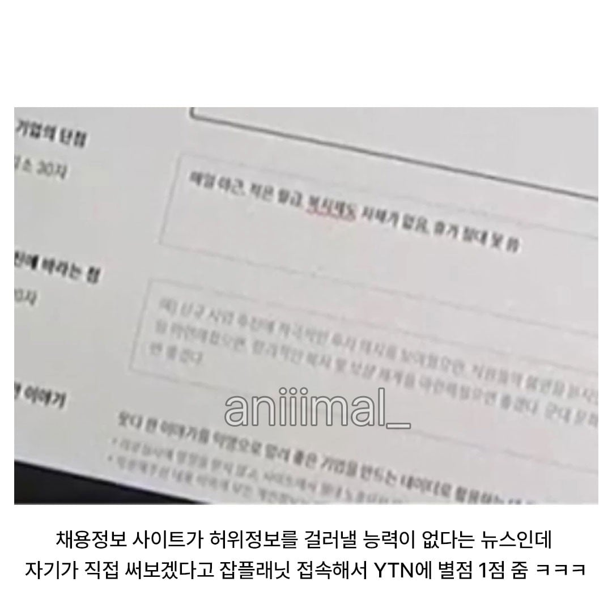

다크나이트
매일 야근, 적은 월급, 복지제도 자체가 없음, 휴가 절대 못씀
저런 잡플래닛에 글쓰는건
보통 남자들 리뷰쓰는것처럼 존나 안좋은거 겪었을때만 적는거니까 적당히 좀 걸러들어야됨
대신 대다수의 리뷰에서 같은 얘기가 나오면 그건 좀 참고할만함
존나 안좋은거 겪게 만들었으니 저런 글이 나온다는 말 아님 그럼?
뭐 팩트기반으로 썼다해도 사람이 쓰는거라 과장도 있고 구라도 있고 부바부 사바사 일 확률이 높으니
근데 리뷰에서 똑같은게 계속해서 나오면 그건 전사적으로 이루어지는 행위라 보면됨
ㅇㅇ그렇긴한데 그게 일반 평균은 아니니까
나도 내 회사생활 만족하는데 잡플 리뷰만 보면 개병신좆소 보는 거 같음
그건 그냥 니가 암 생각 없어서 그런거 아닐까
평점 3점 넘으면 평타이상인거지?
낼 면접 보는회사가 2.1점인데 시발 좀 두려움..
내가 3.4도 다녀봣는데 걍 다 지랄맞아
헉..
사무직 빼고 생산직들이 안좋게쓰는 경우도있으니 맘놓고 일단 붙고서 고민ㄱㄱ
난 1.2이였는데 ㅠㅠ
ㅁㅊㅋㄱㅋㄱㅅㅂ
평점을 믿기보단 이 회사의 가장 최악인 순간을 미리 상상해보는 용도로 쓰는게 좋은거같음
반대로 이악물고 거기까지가서 인터넷에 가입하고 개지랄싸는 행동까지 하게 만든 동기부여를 생각해보면....
ㅋㅋㅋㅋㅋ
남의 회사에 하면 ufc 니까 ㅋㅋㅋㅋㅋ
ㅋㅋㅋㅋㅋㅋㅋㅋㅋㅋㅋ
진짜 할 일 더럽게 없는 병신이 아니고서야 자기 직장도 아닌데 주작할 일이 없고 작성자 수가 많을수록 표본오차가 줄어듦
재직 인증 없으면 퇴사자랑 현직자 구분도 안되잖아
허위정보가 아닌 진실된 정보...